Följ frukten
I denna uppgift ska du få leka med koordinater i Scratch. Koordinater behövs för att ange någon eller någots position. Du ska få animera en robot så att den rör sig runt på scenen och äter frukt.
Ett exempel på hur det kan se ut hittar du här: https://scratch.mit.edu/projects/172523787/
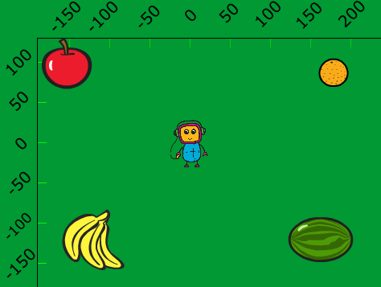
1 - Remixa ett projekt
Vi börjar med att remixa projekt som redan finns på Scratch. Detta gör att det blir enklare att komma igång. Dessutom får du två sprajtar och lite kod på köpet. Smart va?!
Öppna din webbläsare och gå till
https://scratch.mit.edu/projects/172763192/
Klicka på knappen "Se inuti" så att du kan se koden.
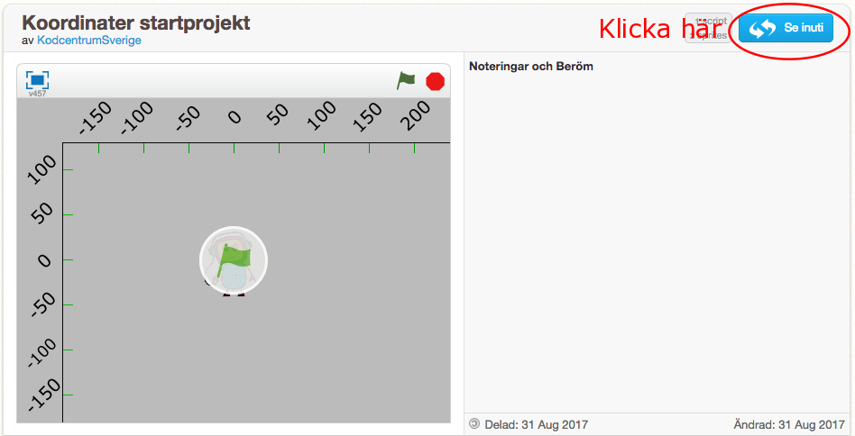
Klicka sedan på knappen "Remix" så att du får din egen version av projektet.
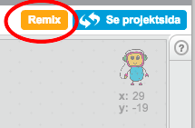
När du har remixat programmet så ser du att projektets namn har förändrats.
Döp om projekt till något som passar bättre.

Namnet på projektet har fått ordet "remix" på slutet
I projektet har du nu två sprajter: 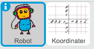
En robot-sprajt som är din spelare
Koordinataxlar som visar x- och y-axeln.
Innan vi börjar koda ska vi först titta lite närmare på våra två sprajter och koordinatsystemet i Scratch.
Markerar sprajten Koordinater så får du upp koden för denna sprajt. Det är en enkel kod som helt enkelt placerar sprajten på rätt ställe på scenen.
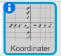Så här ser en markerad sprajt ut
Klicka på fliken Klädslar. Där finns koordinatsystemet uppritat på olika sätt.

Vi kommer använda koordinatsystemet med ett rutnät så att du kan lära dig hur koordinater fungerar. När du lärt dig detta kan du använda en annan klädsel. En annan klädsel kan du också använda om krysset och rutnätet är i vägen för andra sprajter.
Nu ska vi kolla så att placeringen av koordinatsystemet fungerar:
Flytta musen så att den är vid siffran 50 på x-axeln och -100 på y-axeln.
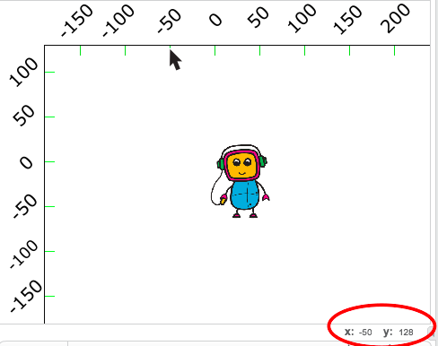
Om du tittar i högra hörnet under scenen så visar Scratch koordinaterna för musen. Stämmer den siffran överens med siffran på det utridade koordinatsystemet?
Klicka nu på sprajten Robot så att den blir markerad. Koordinaten för en sprajt visas i övre högra hörnet i skriptytan. Vilka koordinater har sprajten?

Flytta omkring Robot-sprajten på scenen och se hur koordinaterna ändrar sig
Placera Robot-sprajten ungefär vid x: 0, y:0. Denna punkt kallas origo, och är mitt på scenen.
2 - Bakgrund och frukter
Du ska få börja med att ladda en bakgrundsbild för spelet.
Klicka på fliken Bakgrunder

Klicka på Färgburken och färglägg bakgrunden med en rolig färg. Här i exemplet har jag använt grönt.
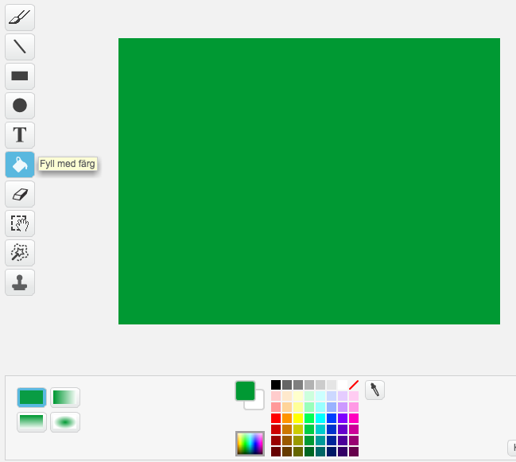
Nu ska vi placera ut några frukter på scenen:
Klicka på "Välj sprajt från biblioteket"

Markera Äpplet och klicka på Ok
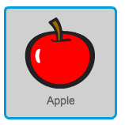
Placera Äpplet i övre vänstra hörnet på scenen.
Lägg själv till tre sprajter och placera ut dem på scenen. Här har vi valt att lägga ut Bananer, Apelsin och Vattenmelon.
Det kan se ut så här:
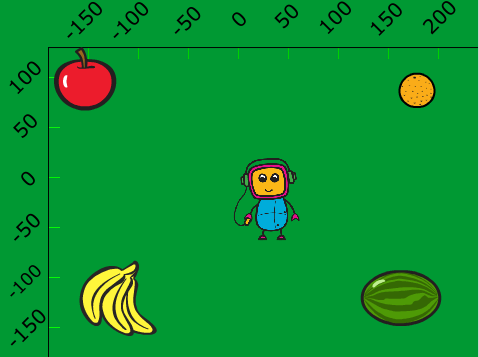
3 - Animera roboten
Nu ska vi animera roboten så att den rör sig mellan de olika frukterna: först till äpplet, sedan till bananerna, sedan till vattenmelonen och till sist till apelsinen.
Börja med att markera Robot sprajten:
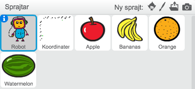
Skapa ett skript för roboten. Börja med att dra in ett kodblock som heter "När denna sprajt klickas på" till skriptytan.
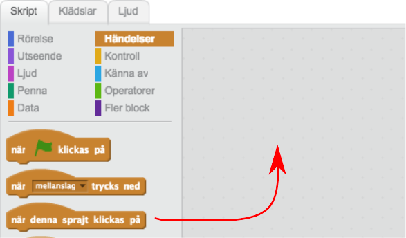
Under detta block fäster du ett kodblock "Gå till x: y:"
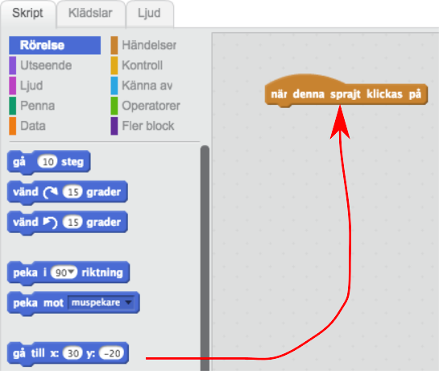
I stället för koordinaterna som står i kodblocket skriver du vilka koordinater du tror att äpplet har. Använd det utritade koordinatsystemet som hjälp. Det kan se ut se här.
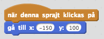
Dra in sedan ett kodblock "Vänta 1 sekund" och fäst det underst i skriptet.
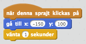
Nu drar du in ett till "gå till x: y:" och anger koordinaterna för bananerna. Och sedan ett “vänta”-block.
Fortsätt så tills du har animerat Roboten att gå runt till alla frukterna.
Testa programmet genom att klicka på Roboten! Går Roboten runt till alla frukterna?
Vi ska göra programmet lite bättre, så att roboten kommer tillbaka till mitten när spelet startar. Vi vill också göra så att roboten inte döljs av frukterna. Detta kallas ett startskript.
Färdig!
Grattis, nu har du skapat ett nytt program!
Glöm inte att spara ditt projekt! Kom ihåg att ge spelet ett bra namn.
Utmaningar
Frukterna äts upp
Du kan göra så att frukterna försvinner när roboten besöker dem. För varje skript behöver du skapa följande skript
När START klickas på
Visa
För alltid
OM rör vid Robot
- Göm
Kan du pussla ihop detta skript från dessa kodblock ?
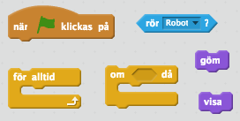
Tips! Du kan kopiera kod mellan sprajter genom att dra ett skript till en sprajt.
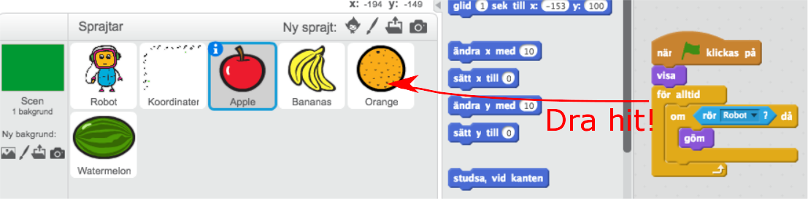
Snitslad bana
Du kan rita en bana på bakgrunden som roboten måste röra sig innanför. På detta sätt blir det viktigare att ange exakta koordinater där Roboten ska röra sig. Det kan se ut så här
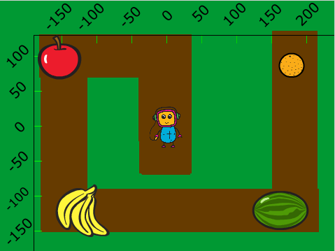
Skapa ett skript för Roboten som säger
När START klickas på
För alltid
OM rör grön färg
- Stoppa alla
Dessa kodblock behöver du:
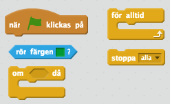
Frågeställningar
Vad är en koordinat?
Hur lång är x–axeln i Scratch?
Hur lång är y–axeln i Scratch?
Vilken koordinat har mitten på scenen?
Vad innebär det att Remixa ett projekt?
Vad är ett startskript? Varför är det bra att använda det?